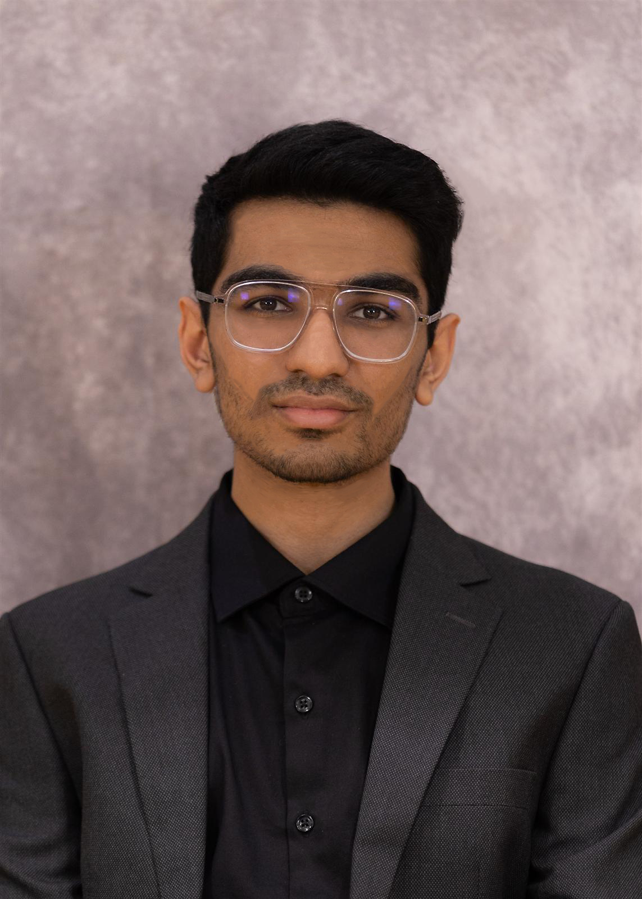

<div class="container" style="padding-top: 2rem;">
    <div class="row">
        <!--About Me-->
        <div class="col-lg shadow border m-1" style="border-radius: 15px;">
            <div class="text-center" style="padding-top: 20px;">
                <h2> About Me </h2>
                <br>

                <div style="padding-bottom: 2rem;">
                    
                </div>
                
                <div style="background-color: #e9ecef; padding: 2rem; border-radius: 15px; box-shadow: 0px 4px 15px rgba(0, 0, 0, 0.1);">
                    <p style="text-align: center; font-size: 1.8rem; font-weight: bold; color: #333;">Hey everyone! 👋</p>
                    <p style="color: #444; font-size: 1.2rem; line-height: 1.6;">
                        I'm <span style="color: #56a0d3; font-weight: bold;">Yuvraj</span>, a senior at <span style="color: #56a0d3; font-weight: bold;">UNC Chapel Hill</span> 
                        majoring in Computer Science and Statistics, with a minor in Data Science. 🎓 <span style="color: #147f06; font-weight: bold;">I'm passionate about using technology 
                        to make a difference</span>, whether it's through software development or data analysis. 
                    </p>
                    <p style="color: #444; font-size: 1.2rem; line-height: 1.6;">
                        At <a href="https://csxl.unc.edu/welcome"> CSXL</a>, 
                        I had the awesome opportunity to create an Angular web app that lets students <span style="color: #e60800; font-weight: bold;">easily reserve study rooms </span>within the 
                        Computer Science building 🖥️📚. I also stepped up as a <span style="color: #56a0d3; font-weight: bold;"> scientific programmer </span> at a Neuroscience lab 🧠, where I 
                        helped develop and maintain vital imaging software that's now a go-to tool for professors and students alike.
                    </p>
                    <p style="color: #444; font-size: 1.2rem; line-height: 1.6;">
                        When I'm not coding or crunching numbers, you'll find me <span style="color: #56a0d3; font-weight: bold;">swimming</span> 🏊‍♂️, 
                        <span style="color: #e60800; font-weight: bold;">running</span> 🏃‍♂️, or <span style="color: #147f06; font-weight: bold;"> trekking through nature </span>🏞️. 
                        I'm also a big fan of board games 🎲, especially when played with friends. And as a <span style="color: #e600a1; font-weight: bold;">chess enthusiast</span> ♟️ 
                        with a rating of 1807 on chess.com, 
                        I love challenging myself with the Ruy Lopez as White, while alternating between the Sicilian Defense and the French Defense as Black.
                    </p>
                </div>
                <br>                
            </div>
        </div>

        <!--Featured Project-->
        <div class="col-lg shadow border m-1" style="border-radius: 15px;">
            <div class="text-center" style="padding-top: 20px;">
                <h2> Featured Project </h2>
            </div>
        </div>
    </div>
</div>
